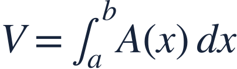
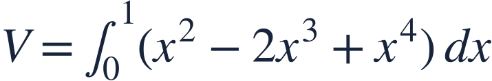
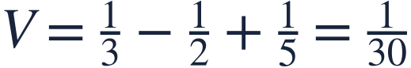
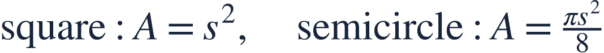

Volumes from cross sections
단면으로 부피 구하기
A solid’s volume accumulates cross-sectional area, not just the base width.
입체의 부피는 밑면의 폭만이 아니라 단면의 넓이를 누적합니다.
A solid’s volume accumulates cross-sectional area, not just the base width.
입체의 부피는 밑면의 폭만이 아니라 단면의 넓이를 누적합니다.
Perpendicular to the x-axis, each cross section is a square whose side spans the base.
x축에 수직인 각 단면은 밑면을 가로지르는 선분을 한 변으로 하는 정사각형입니다.

Turn the slice width into a square area before integrating along x.
단면 폭을 정사각형의 넓이로 바꾼 뒤 x방향으로 적분합니다.
Square the full side length, including both terms.
두 항을 포함한 변의 길이 전체를 제곱합니다.

Expanding the square makes termwise integration straightforward.
제곱을 전개하면 항별로 쉽게 적분할 수 있습니다.

The result uses cubic units because area was accumulated along a length.
넓이를 길이 방향으로 누적했으므로 결과는 부피 단위입니다.

The specified cross-sectional shape determines A(x); a width alone is not an area.
주어진 단면 모양에 따라 A(x)를 정합니다. 폭 자체는 넓이가 아닙니다.
Find the volume for semicircular cross sections.
반원 단면의 부피를 구하세요.